CHAPTER 8
Verdani and Morvus
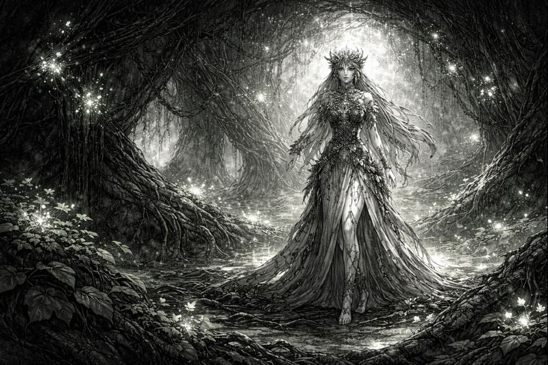
Life filled the chamber before the battle began.
Roots threaded through broken stone.
Verdani stood barefoot among her creation,
breathing with it — listening.
Growth was her answer to every wound.
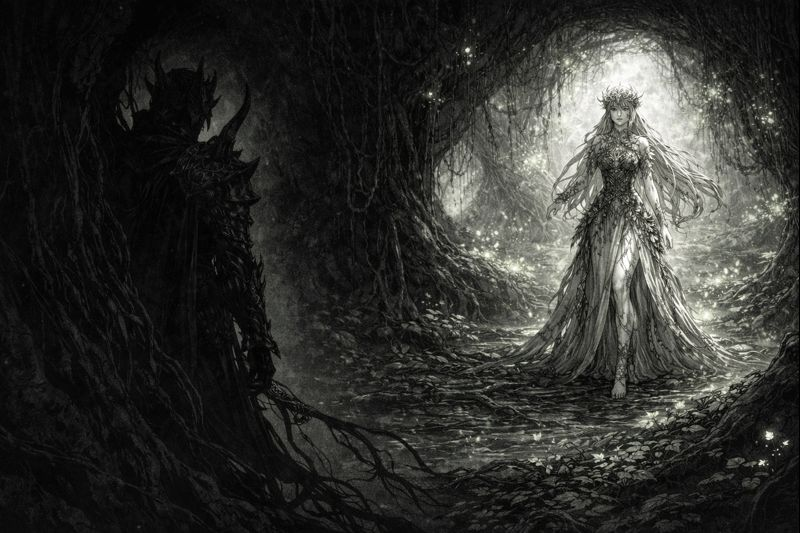
Shadow entered without resistance.
Without hostility.
Morvus did not push life away.
Darkness rested between roots and stone.
“You fear me,” he said quietly,
“because you believe I end things.”
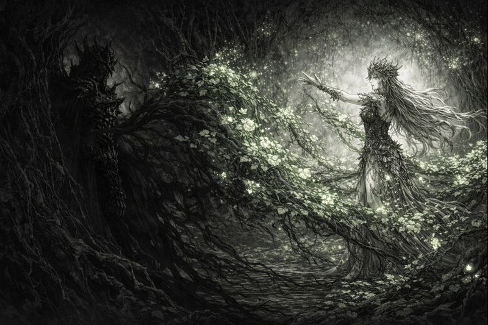
Verdani answered by letting life surge.
Vines rose. Branches hardened.
Flowers bloomed with violent urgency.
Growth pressed outward, overwhelming space.
“Life must expand,” she said.
“Or it suffocates.”
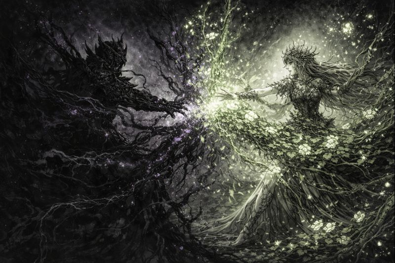
Shadow did not retreat.
It accepted.
Growth slowed where darkness passed.
Not destroyed — quieted.
“Everything grows,” Morvus replied.
“But nothing grows forever.”
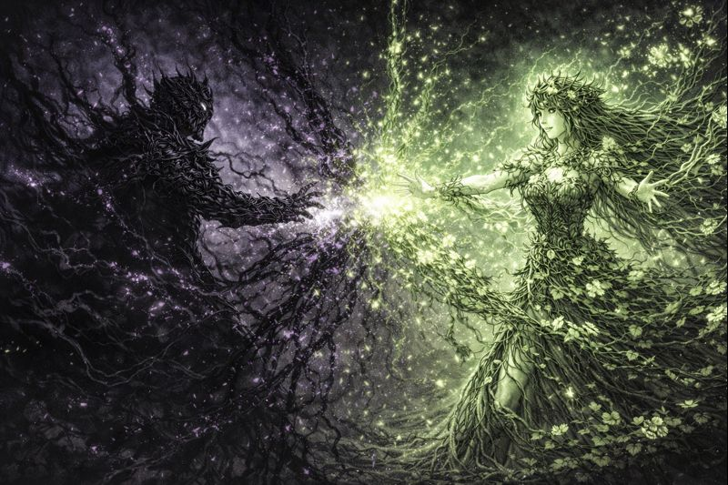
Verdani felt it then —
not resistance,
but balance she could not command.
Life strained against itself.
Roots tangled. Blooms withered mid-growth.
“You are limiting me,” she whispered.
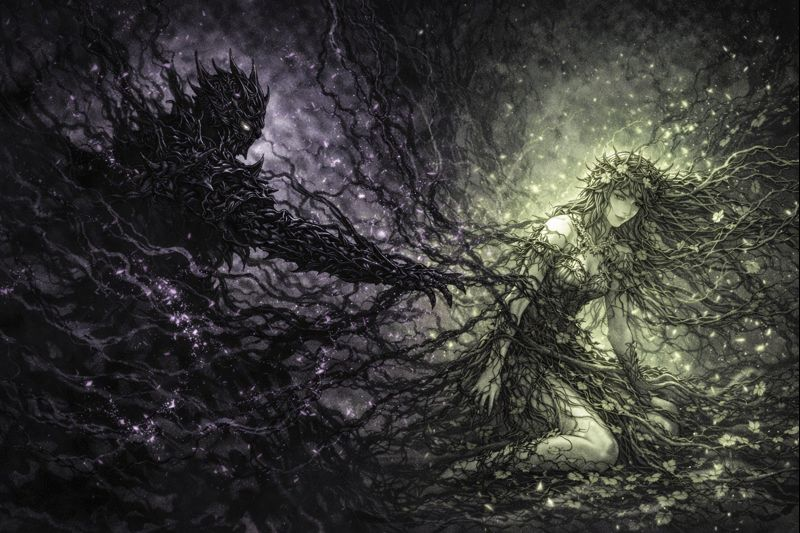
Shadow deepened — not wider,
but truer.
Morvus stood still as the darkness aligned around him.
Not hunger.
Not cruelty.
Understanding.
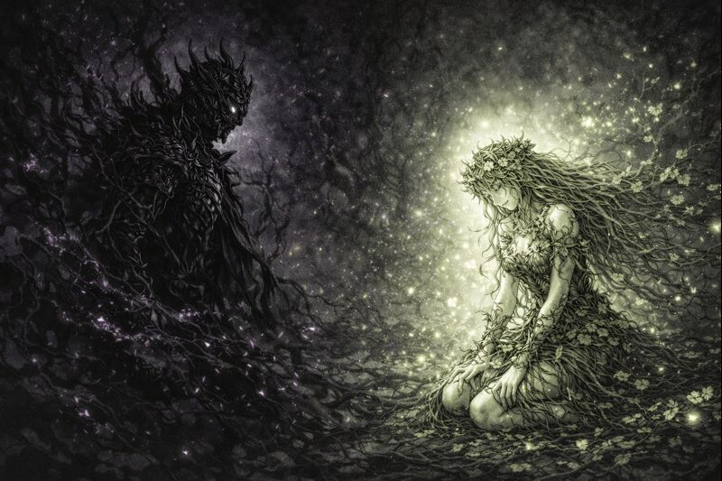
Verdani collapsed — breath unsteady,
crown dimmed but unbroken.
And yet… life did not vanish.
It changed.
It slowed.
“This is not death,” she realized.
“This is restraint.”
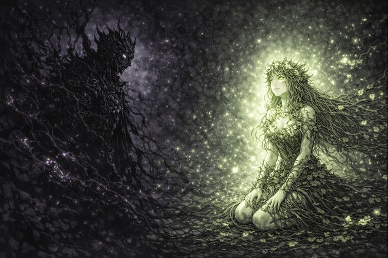
Morvus turned away first.
Victory did not require witnesses.
“Life without shadow becomes a sickness,” he said.
“I did not defeat you.”
“I reminded you.”
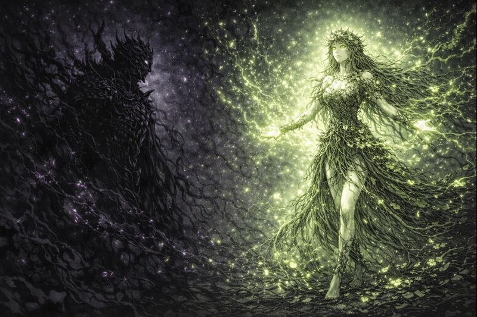
Verdani rose slowly.
Her power steadier — quieter.
Growth returned — measured,
deliberate.
She had lost the battle.
She had gained balance.
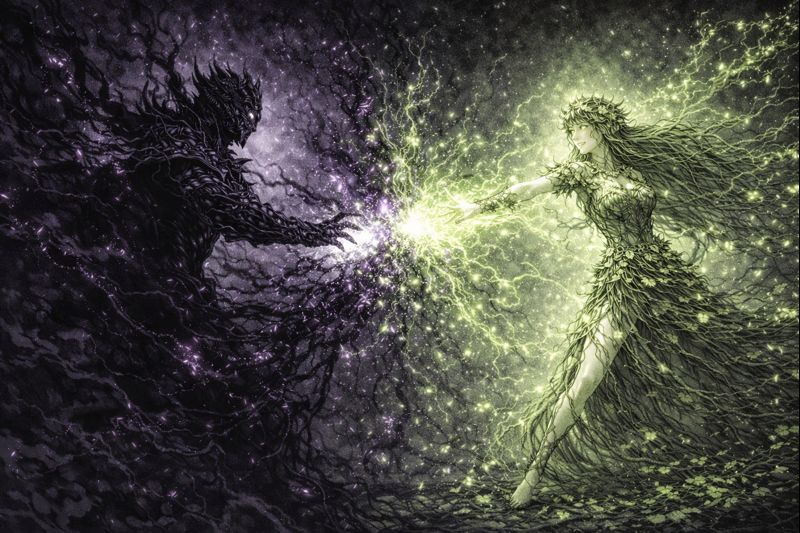
Shadow no longer clung to Morvus.
It answered him.
Not as a weapon.
Not as a hunger.
But as truth given shape.
From beyond the fracture,
another presence watched.
Shadow learns restraint.
Life accepts limitation.
Nihilus smiled — though no face was seen.
“Yes…”
“This is how thrones begin to fall.”
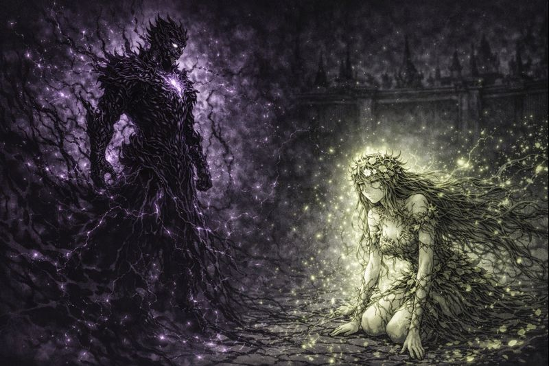
Power had not vanished.
It had matured.
And somewhere beyond sight,
the void leaned closer.
Not to intervene —
but to wait.
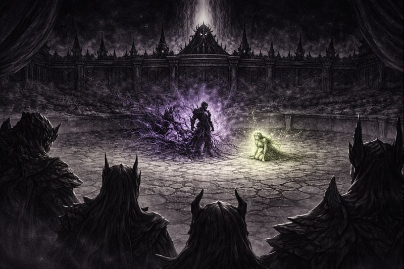
The chamber healed slowly.
Roots withdrew. Shadows settled.
Balance had been restored —
not by victory,
but by loss.
And the awakening had begun.
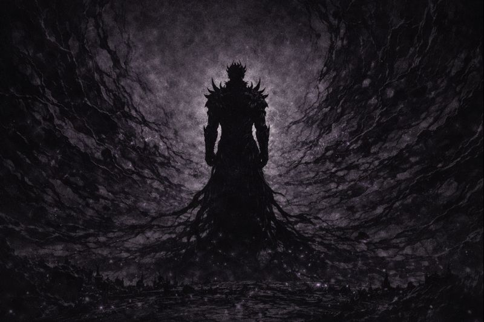
Nihilus stood alone as the void bent toward him.
“They believe awakening is growth,” he whispered.
“They believe balance is salvation.”
“Let them.”
“Every awakening carves space for me.”
“When they are finished becoming…”
“I will finish ruling.”
✦ ✦ ✦